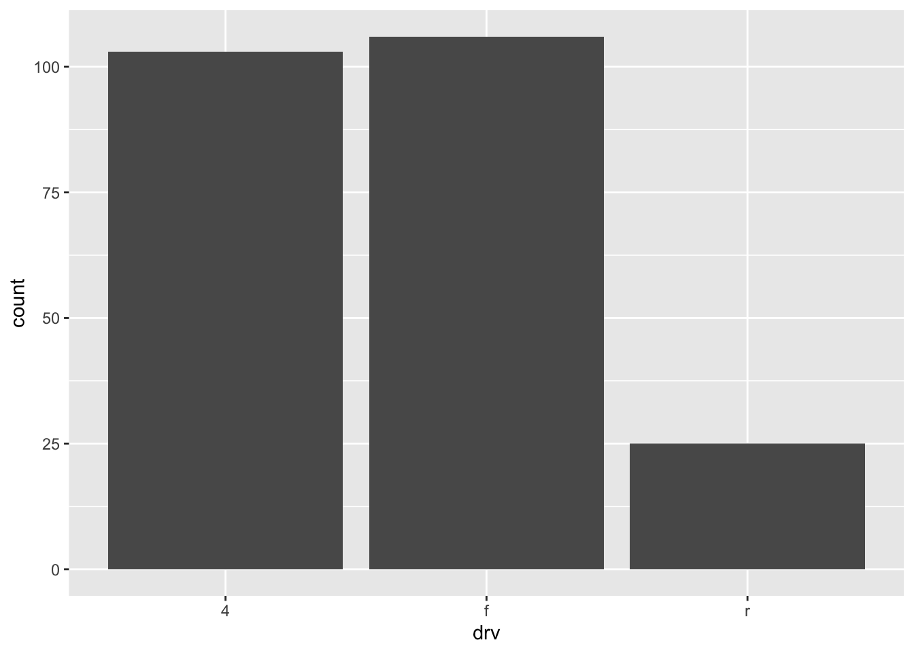
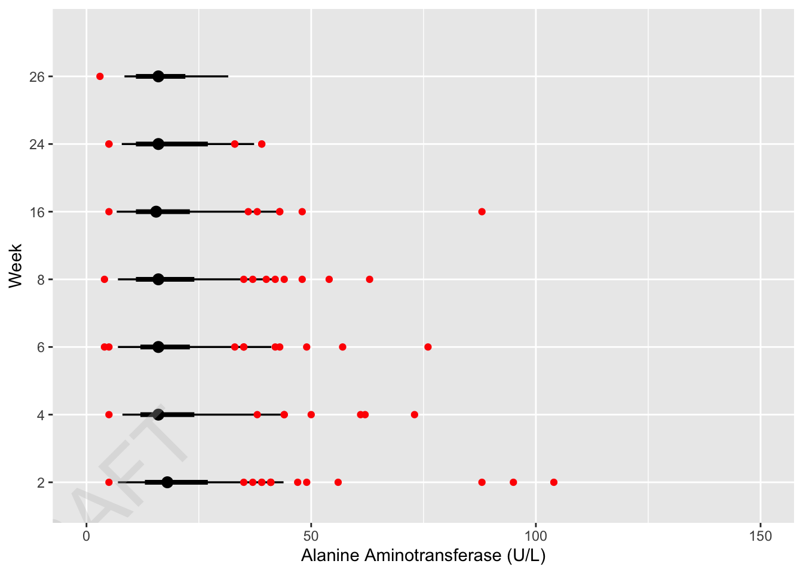

# here's an evaluated argument
log(10)[1] 2.302585# this can also be considered an evaluated argument
x <- 10
log(x)[1] 2.302585In this Mini-Project, we’ll look at how to use tidy evaluation (aka tidyeval) to program functions that use tidyverse packages such as dplyr in more advanced ways. The training here serves a continuation to the materials on functions covered in Mini-Projects 7 and 8.
Tidyeval is what allows us to pass column names into tidyverse functions like dplyr’s select() without quotation marks:
mtcars %>% select(mpg, cyl)
You can think of tidyeval as a toolkit for metaprogramming in R. It is what powers the tidyverse. We’ll look at how we can write R functions using tidyeval concepts in this training.
You can think of tidyeval as something similar to SAS macros but for R. Note that some of the concepts may be completely different from what you’ve used in SAS, since R does not have PROCs or DATA steps. We’ve added short chunks of text where there are similarities.
What are evaluated and quoted arguments, you might ask? You’ve used evaluated arguments without realizing it already. Here are examples of evaluated arguments:
# here's an evaluated argument
log(10)[1] 2.302585# this can also be considered an evaluated argument
x <- 10
log(x)[1] 2.302585Quoting enables dplyr::select() and the other dplyr verbs to use their input as they want without worrying about how that input evaluates in the global environment. It’s what allows you to work on the mpg column even when there might be an object named mpg in the global environment.
Here’s an example of a quoted argument.You’ll see that the mpg object in the global env gets ignored in favor of the mpg column within the mtcars dataset.
mpg <- 5020
mtcars %>% select(mpg) %>% head(5) mpg
Mazda RX4 21.0
Mazda RX4 Wag 21.0
Datsun 710 22.8
Hornet 4 Drive 21.4
Hornet Sportabout 18.7We’ll often pass quoted arguments through our functions when using tidyeval.
Now try to guess what you think will happen in the following example. Run it to see if it matches your expectation.
df <- data.frame(x = NA, y = 2)
x <- 500
df %>% dplyr::mutate(y = y / x) x y
1 NA NAThat’s an example of what’s called a column collision. A column collision occurs when you want to use an object defined outside of the data frame, but a column of the same name happens to already exist. You can also have the opposite problem called an object collision when there is a typo in a data variable name and an environment variable of the same name exists.
df <- data.frame(foo = "this is right")
ffo <- "this is wrong"
df %>% dplyr::mutate(foo = toupper(ffo)) foo
1 THIS IS WRONGHow do you prevent such column or object collisions? The easiest solution is to use the .data and .env pronouns to disambiguate between data-variables and env-variables. Here’s an example of how you can use them to prevent collisions by being more specific.
This is somewhat similar to global vs local scope in SAS for Macro Variables, where you might use the %LOCAL or %GLOBAL statements to avoid collision. It also connects to the previous training on debugging that discussed Global vs local in R (see MiniProject9 if you forgot about this). In this case, it’s not local to a function but local to the dataframe with the .data pronoun.
df <- data.frame(x = 1, y = 2)
x <- 100
df %>%
mutate(z1 = y / x) %>%
mutate(z2 = .data$y / .env$x) x y z1 z2
1 1 2 2 0.02Here’s another example from the rlang documentation that shows how these concepts could be useful. Try running it line by line to track what’s going on.
# First attempt at using a factor as an argument
my_rescale1 <- function(data, var, factor = 10) {
data %>% dplyr::mutate("{{ var }}" := {{ var }} / factor)
}
# You're probably wondering what := is. It's basically a special assignment operator called the walrus operator. This will be explained more later in the training. For now just notice how we want to use the factor argument passed through the function.
# This works
# the data.frame() function creates data frames (run ?data.frame() for more info)
data.frame(value = 1) %>% my_rescale1(value) value
1 0.1# This doesn't work as expected
# Can you tell what's going on (hint: figure out which factor value it's using)?
data.frame(factor = 0, value = 1) %>% my_rescale1(value) factor value
1 0 Inf# Okay, let's fix this.
# Here's a solution to this:
my_rescale2 <- function(data, var, factor = 10) {
data %>% dplyr::mutate("{{ var }}" := {{ var }} / .env$factor)
}
# Yay!
data.frame(factor = 0, value = 1) %>% my_rescale2(value) factor value
1 0 0.1... in a function can take any number of arguments. Passing … is equivalent to the combination of enquos() and !!!. Those component functions are outside of the scope of this training.
For example, we could use the dynamic dots operator to filter by an unlimited number of conditions for a custom function. Let’s do that on the mpg dataset to get Jeeps manufactured in 2008 (use ?mpg for info on the dataset).
# load mpg data set
data(mpg)
# define mpg filter function
mpg_filter <- function(...) {
mpg %>%
filter(...)
}
# update the arguments here to get Jeeps from 2008
mpg_filter(manufacturer == "volkswagen", year == 1900)# A tibble: 0 × 11
# ℹ 11 variables: manufacturer <chr>, model <chr>, displ <dbl>, year <int>,
# cyl <int>, trans <chr>, drv <chr>, cty <int>, hwy <int>, fl <chr>,
# class <chr>In the example above, we were able to collect multiple arguments in through filter().
Fix the function using dynamic dots so that it works as expected (hint: we looked at this in Mini-Project 7). Make sure you understand what’s going on before moving on.
mySummary <- function(myData, ...) { # Added ... to accept additional arguments
myData %>%
group_by( TRT01AN, TRT01A ) %>%
summarise(mean = round(mean(AGE), ...), # Pass ... to round()
.groups = 'drop') # Added for good practice to ungroup after summarise
}
mySummary(adsl_saf)# A tibble: 3 × 3
TRT01AN TRT01A mean
<dbl> <chr> <dbl>
1 0 Placebo 75
2 54 Xanomeline Low Dose 76
3 81 Xanomeline High Dose 74mySummary(adsl_saf, digits = 1)# A tibble: 3 × 3
TRT01AN TRT01A mean
<dbl> <chr> <dbl>
1 0 Placebo 75.2
2 54 Xanomeline Low Dose 75.7
3 81 Xanomeline High Dose 74.4When you create a function around a tidyverse pipeline, wrap the function arguments containing data frame variables with {{ and }}. {{ is the combination of enquo() and !!. This will allow you to pass named arguments through the function. You may remember that we’ve used this operator in previous Mini-Projects.
To connect this to SAS, functions can be thought of as SAS macros. You can think of the embrace operator as a way to setup parameters/pass arguments for data frame variables into a function. This is similar to what we would do in a SAS macro where all the key words in SAS statements that are related to macro variables or macro programs are preceded by percent sign %; and when we reference a macro variable it is preceded by an ampersand sign &. Note that this is specifically for dataframe variables. As you remember from the previous trainings, you don’t need in every case for a custom function.
This is an example of what that looks like.
plot_mpg <- function(var) {
mpg %>%
ggplot(aes({{ var }})) +
geom_bar()
}
plot_mpg(drv)
Let’s apply that operator again on the mpg dataset to get summary statistics by manufacturer for city miles per gallon. Fix this example using the embrace operator, so that it works.
grouped_mean <- function(df, group_var, summary_var) {
df %>%
group_by( {{ group_var }} ) %>% # Embrace group_var
summarize(mean = mean( {{ summary_var }} ) %>% round(digits = 0) %>% format(nsmall = 0) , # Embrace summary_var
sd = sd( {{ summary_var }} ) %>% round(digits = 1) %>% format(nsmall = 1), # Embrace summary_var
med = median( {{ summary_var }} ) %>% round(digits = 0) %>% format(nsmall = 0) , # Embrace summary_var
min = min( {{ summary_var }} ) %>% format(nsmall = 0), # Embrace summary_var
max = max( {{ summary_var }} ) %>% format(nsmall = 0), # Embrace summary_var
n = n(),
.groups = 'drop') # Add .groups = 'drop' for good practice
}
# Now, test the function as intended:
grouped_mean(df = mpg, group_var = manufacturer, summary_var = cty)# A tibble: 15 × 7
manufacturer mean sd med min max n
<chr> <chr> <chr> <chr> <chr> <chr> <int>
1 audi 18 2.0 18 15 21 18
2 chevrolet 15 2.9 15 11 22 19
3 dodge 13 2.5 13 9 18 37
4 ford 14 1.9 14 11 18 25
5 honda 24 1.9 24 21 28 9
6 hyundai 19 1.5 18 16 21 14
7 jeep 14 2.5 14 9 17 8
8 land rover 12 0.6 12 11 12 4
9 lincoln 11 0.6 11 11 12 3
10 mercury 13 0.5 13 13 14 4
11 nissan 18 3.4 19 12 23 13
12 pontiac 17 1.0 17 16 18 5
13 subaru 19 0.9 19 18 21 14
14 toyota 19 4.0 18 11 28 34
15 volkswagen 21 4.6 21 16 35 27Connecting this to SAS macros,in the case above, what you did is similar to using the SYMGET() function in SAS Macros to create a new variable in a DATA STEP using information from a macro variable.
The walrus operator is useful for assigning things. It’s easy to remember b/c it’s shaped like a walrus::=. Generally, if you’re using the embrace operator or bang-bang on the left hand side of an assignment then you’ll need the walrus operator (:=).
!! is the bang-bang operator. !! says something like “evaluate me!” or “unquote!” We can tell group_by() not to quote by using !!.
enquo() here is also used to return a quosure. What is a quosure, you might ask? A quosure is a special type of defused expression (skim this doc link for if you want to understand what that means: https://rlang.r-lib.org/reference/topic-defuse.html). It keeps track of the original context the expression was written in. Visit the rlang help docs for enquo() or !! if you want to learn more (you can use ?rlang::!! or ?rlang::enquo()).
Here’s an example that uses those concepts together. It creates a function that calculates the mean of a variable of interest and assigns it to a new variable name of interest. You’ll see this is useful where we want to pass an argument that assigns a new variable name into a dataframe. This would be difficult to do otherwise.
summary_mean <- function(df, summary_var, summary_name) {
summary_var <- enquo(summary_var)
summary_name <- enquo(summary_name)
df %>% summarize(!!summary_name := mean(!!summary_var))
# is there any way we can simplify this function here (hint: using the embrace operator)?
}
summary_mean(df = mpg, summary_var = cty, summary_name = cty_mean)# A tibble: 1 × 1
cty_mean
<dbl>
1 16.9Let’s try it out now. Run and try to understand the following examples using the walrus and bang-bang operators.
#pattern 1
mySummary1 <- function(myData, summary_var, ...){
summary_var <- enquo(summary_var)
myData %>%
group_by( TRT01AN, TRT01A ) %>%
summarise(mean = round(mean(!!summary_var), ... ))
}
mySummary1(adsl_saf, AGE, digits = 1)`summarise()` has grouped output by 'TRT01AN'. You can override using the
`.groups` argument.# A tibble: 3 × 3
# Groups: TRT01AN [3]
TRT01AN TRT01A mean
<dbl> <chr> <dbl>
1 0 Placebo 75.2
2 54 Xanomeline Low Dose 75.7
3 81 Xanomeline High Dose 74.4#pattern 2
mySummary2 <- function(myData, summary_var, summary_name, ...){
summary_var <- enquo(summary_var)
myData %>%
group_by( TRT01AN, TRT01A ) %>%
summarise({{summary_name}} := round(mean(!!summary_var), ... ))
}
mySummary2(adsl_saf, AGE, mean, digits = 1)`summarise()` has grouped output by 'TRT01AN'. You can override using the
`.groups` argument.# A tibble: 3 × 3
# Groups: TRT01AN [3]
TRT01AN TRT01A mean
<dbl> <chr> <dbl>
1 0 Placebo 75.2
2 54 Xanomeline Low Dose 75.7
3 81 Xanomeline High Dose 74.4#pattern 3
mySummary3 <- function(myData, summary_var, summary_fn, ...){
# we no longer need this enquo() line... can you explain why?
# summary_var <- enquo(summary_var)
myData %>%
group_by( TRT01AN, TRT01A ) %>%
summarise({{summary_fn}} := round(summary_fn({{summary_var}}), ... ))
}
mySummary3(adsl_saf, AGE, mean, digits = 1)`summarise()` has grouped output by 'TRT01AN'. You can override using the
`.groups` argument.# A tibble: 3 × 3
# Groups: TRT01AN [3]
TRT01AN TRT01A mean
<dbl> <chr> <dbl>
1 0 Placebo 75.2
2 54 Xanomeline Low Dose 75.7
3 81 Xanomeline High Dose 74.4mySummary3(adsl_saf, AGE, median, digits = 1)`summarise()` has grouped output by 'TRT01AN'. You can override using the
`.groups` argument.# A tibble: 3 × 3
# Groups: TRT01AN [3]
TRT01AN TRT01A median
<dbl> <chr> <dbl>
1 0 Placebo 76
2 54 Xanomeline Low Dose 77.5
3 81 Xanomeline High Dose 76 A symbol represents the name of an object like x, mtcars, or mean. There may be cases where you need to reuse the symbol passed as an argument as a string within the function body. In that case, rlang::as_name() in combination with substitute() can help convert the symbol into a character string. Read the function documentation for more info by using ?rlang::as_name() and ?substitute().
mpgf <- function(.data, var_value) {
var_value <- rlang::as_name(substitute(var_value))
.data %>%
transmute(var = var_value)
}
mpgf(mpg, test1) %>% head(5)# A tibble: 5 × 1
var
<chr>
1 test1
2 test1
3 test1
4 test1
5 test1Fix the following example from Mini-Project 4 to work by using the pair of functions we just went over:
get_cat_demo <- function(.data = adsl_saf, variable = RACE) {
# HINT: what character variable needs to be defined in this function?
# Capture the variable as a quosure and then convert it to its name (character string)
var_char <- rlang::as_name(enquo(variable))
Big_N_cnt <- adsl_saf %>%
group_by(TRT01AN, TRT01A) %>%
count(name = "N", .groups = 'drop') # Added .groups = 'drop' for best practice
small_n_cnt <- adsl_saf %>%
group_by(TRT01AN, TRT01A, SEX) %>%
count(name = "n", .groups = 'drop') # Added .groups = 'drop' for best practice
Agegrp_N_cnt <- adsl_saf %>%
group_by(TRT01AN, TRT01A, {{variable}}) %>% # {{variable}} embraces the variable for grouping
count(name = "age_total") %>%
ungroup() %>%
complete(nesting(TRT01AN, TRT01A), {{variable}}, # {{variable}} embraces for complete
fill = list(age_total=0))
age_n_cnt <- adsl_saf %>%
group_by(TRT01AN, TRT01A, SEX, {{variable}}) %>% # {{variable}} embraces the variable for grouping
count(name = "age_n") %>%
ungroup() %>%
# Ensure all grouping variables are in nesting for proper completion
complete(nesting(TRT01AN, TRT01A, SEX), {{variable}}, # Added SEX to nesting, and {{variable}} for tidyeval
fill = list(age_n=0))
age_mrg_cnt <- age_n_cnt %>%
left_join(Agegrp_N_cnt,
by = c("TRT01AN", "TRT01A", var_char)) # Use var_char here
age_mrg_cnt2 <- age_mrg_cnt %>%
left_join(Big_N_cnt,
by = c("TRT01AN", "TRT01A"))
age_mrg_cnt3 <- age_mrg_cnt2 %>%
left_join(small_n_cnt,
by = c("TRT01A", "TRT01AN", "SEX"))
age_mrg_cnt3 <- ungroup(age_mrg_cnt3)
age_data_new <- age_mrg_cnt3 %>%
mutate(perc_tot = round((age_total/N)*100, 1)) %>%
mutate(perc_age = round((age_n/n)*100,1))
age_pct <- age_data_new %>%
mutate(perc_tchar = format(perc_tot, nsmall = 1)) %>%
mutate(perc_achar = format(perc_age, nsmall = 1))
age_n_pct <- age_pct %>%
mutate(npct = paste(age_n, paste0("(", perc_achar, ")"))) %>%
select({{variable}}, TRT01A, SEX, npct) # {{variable}} embraces for select
Age_trans <- pivot_wider(age_n_pct,
names_from = c(TRT01A,SEX),
values_from = npct,
values_fill = "0",
names_sep = "_")
age_cat <- rename(Age_trans, category={{variable}}) # {{variable}} embraces for rename
sorted_age_cat <- age_cat %>%
arrange(category)
return(sorted_age_cat)
}
# Example usage (assuming adsl_saf is defined in your environment)
get_cat_demo(variable = RACE)# A tibble: 3 × 7
category Placebo_Female Placebo_Male Xanomeline Low Dose_…¹
<chr> <chr> <chr> <chr>
1 AMERICAN INDIAN OR ALASKA … 0 ( 0.0) 0 ( 0.0) 0 ( 0.0)
2 BLACK OR AFRICAN AMERICAN 5 ( 9.4) 3 ( 9.1) 6 ( 12.0)
3 WHITE 48 ( 90.6) 30 ( 90.9) 44 ( 88.0)
# ℹ abbreviated name: ¹`Xanomeline Low Dose_Female`
# ℹ 3 more variables: `Xanomeline Low Dose_Male` <chr>,
# `Xanomeline High Dose_Female` <chr>, `Xanomeline High Dose_Male` <chr>Tidyeval can get pretty complicated. We’ve tried to explore a few common scenarios you might encounter in this training. If you want to learn more, consider reviewing the following links:
Let’s revisit a dataset you used before. Apply the embrace and dynamic dots concepts you learned in this mini project to the adsl_counts function that you developed in Mini-Project 7. Here’s some code to start.
library(ggdist)
Attaching package: 'ggdist'The following object is masked from 'package:rlang':
lllibrary(cowplot)
Attaching package: 'cowplot'The following object is masked from 'package:lubridate':
stamplibrary(rio) # Ensure rio is loaded for import()
library(dplyr) # Ensure dplyr is loaded for %>% and filter/mutate
inFile <- "./data/adlbc.xpt"
# TODO: fix the function
plot_ALT <- function(ALT, x_var, y_var, ...) { # ... will capture extra arguments for labs()
ALT2 <- ALT %>%
filter(VISITNUM > 3) %>%
mutate(WEEK = floor(ADY/7)) %>%
filter(WEEK %in% c(2, 4, 6, 8, 16, 24, 26))
ALT2 %>%
ggplot(mapping = aes(x = {{ x_var }}, y = as.factor( {{ y_var }} ))) + # Embrace x_var and y_var
coord_cartesian(xlim=c(0, 150)) +
ggdist::stat_dotsinterval(show_slab=FALSE) +
geom_point(data = ALT2 %>% filter(LBNRIND %in% c("HIGH", "LOW")),
mapping = aes(x = {{ x_var }}, y = as.factor( {{ y_var }} )), # Embrace x_var and y_var again for geom_point
colour="red") +
labs(...) + # Pass any additional arguments directly to labs()
cowplot::draw_label("DRAFT", color = "grey",
alpha=0.3, size = 50,
angle = 45)
}
# TODO: check if your function works as expected
import(inFile) %>%
filter(PARAMCD == "ALT") %>%
plot_ALT(x_var = LBSTRESN, y_var = WEEK, # These are the column names from the data
x = "Alanine Aminotransferase (U/L)", y = "Week") # These are labels passed to labs()